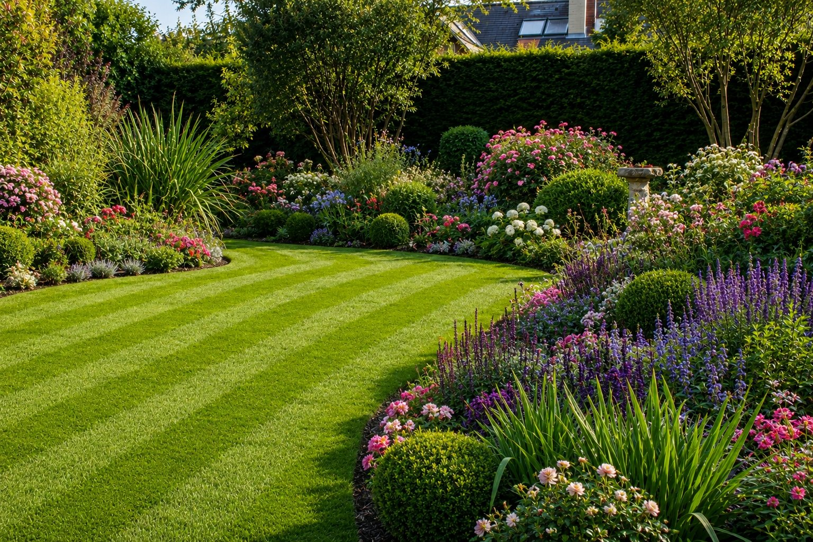

Un sol compact, c'est un sol qui étouffe. Sur les golfs on aère en permanence pour garder un gazon vivant — et la bonne nouvelle, c'est que la meilleure aération ne nécessite aucun produit chimique. Juste de la technique et du bon sens.

Pourquoi un sol compact tue votre pelouse
Le passage répété — enfants, animaux, tonte — tasse le sol au fil du temps. L'air, l'eau et les nutriments n'arrivent plus jusqu'aux racines. Résultat : un gazon qui jaunit, qui pousse mal, malgré tous les engrais du monde.
💡 Le test simple : Plantez un tournevis dans votre pelouse. S'il s'enfonce difficilement, votre sol est compact et a besoin d'être aéré.
Les méthodes naturelles qui fonctionnent
L'aération mécanique manuelle
Une fourche à bêcher ou un aérateur à pointes — on perce le sol à intervalles réguliers pour créer des poches d'air. Technique simple, zéro chimie, résultat immédiat sur la circulation de l'eau.
Le compost en surface
Après aération, un fin tapis de compost bien décomposé nourrit le sol naturellement et active la vie microbienne — vers de terre, bactéries bénéfiques. C'est ce qui rend un sol vraiment riche, durablement.
Le bon moment dans l'année
Aérer au mauvais moment stresse inutilement le gazon. Il y a une fenêtre précise où le sol est réceptif et où le gazon récupère vite — en dehors de cette période, l'opération est presque inutile.
⚠️ L'erreur fréquente : Aérer une pelouse déjà stressée par la sécheresse ou la chaleur. Ça l'affaiblit encore plus. L'aération doit intervenir quand le gazon est en pleine croissance, pas en difficulté.
Et les vers de terre dans tout ça ?
Ce sont vos meilleurs alliés gratuits. Un sol riche en vers de terre s'aère naturellement en continu. Certaines pratiques favorisent leur présence, d'autres les font fuir — et c'est souvent là que se joue la vraie différence entre un sol qui reste pauvre et un sol qui s'enrichit tout seul années après années.
Chaque sol a ses propres besoins
Un sol argileux compact ne se traite pas comme un sol sableux. La fréquence d'aération, la méthode et la période idéale changent selon votre terrain, votre région et l'usage de votre jardin. Ce qui marche chez le voisin ne marche pas forcément chez vous.
Votre sol est compact ?
Envoyez-moi une photo de votre pelouse. Je vous indique la méthode d'aération exacte adaptée à votre type de sol, sans aucun produit chimique — diagnostic personnalisé à partir de 29€.
📸 Envoyer mon jardin → 29€